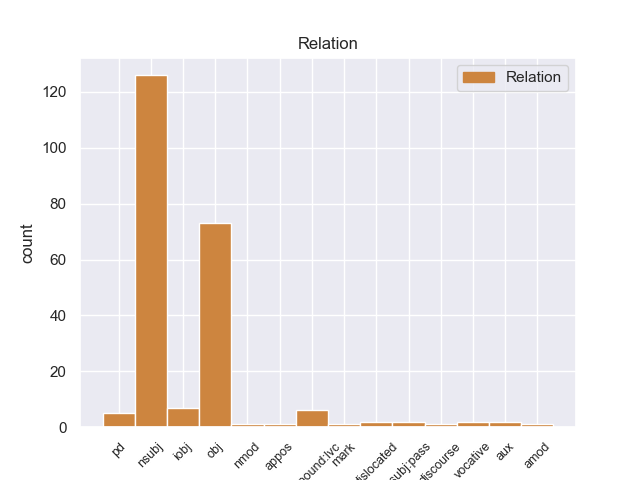
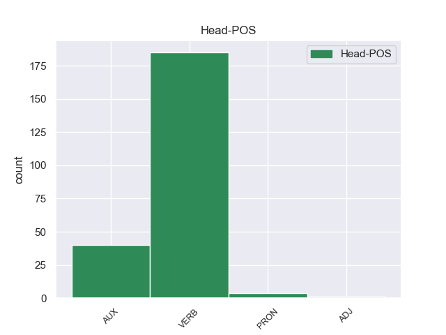
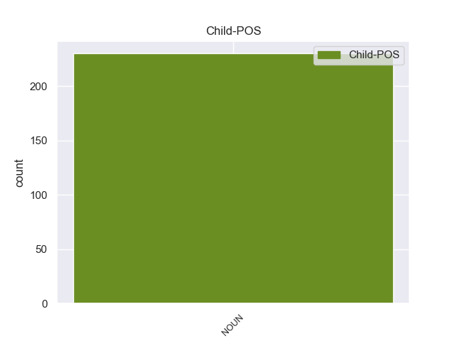

Distribution of features within this leaf



Agreement Rules sorted by frequency.
- When the dependent token is the nominal subject(nsubj) of the head token, and the head token is VERB and the dependent token is NOUN.
1 None _ _ _ _ 0 _ _ _
2 None _ _ _ _ 0 _ _ _
3 शब्द _ _ _ _ 0 _ _ _
4 None _ _ _ _ 0 _ _ _
5 None _ _ _ _ 0 _ _ _
6 None _ _ _ _ 0 _ _ _
7 None _ _ _ _ 0 _ _ _
8 गाय गाय NOUN -- Case=Nom|Gender=Fem|Number=Sing 9 nsubj _ _
9 हंबरायची हंबरणे VERB -- Aspect=Hab|Gender=Fem|Mood=Ind|Number=Sing|Person=3|Tense=Past|VerbForm=Fin 0 _ _ _
10 . _ _ _ _ 0 _ _ _
1 मग _ _ _ _ 0 _ _ _
2 तिला _ _ _ _ 0 _ _ _
3 एक _ _ _ _ 0 _ _ _
4 छोटा _ _ _ _ 0 _ _ _
5 हात _ _ _ _ 0 _ _ _
6 दिसतो _ _ _ _ 0 _ _ _
7 आणि _ _ _ _ 0 _ _ _
8 जवळ _ _ _ _ 0 _ _ _
9 None _ _ _ _ 0 _ _ _
10 None _ _ _ _ 0 _ _ _
11 None _ _ _ _ 0 _ _ _
12 None _ _ _ _ 0 _ _ _
13 डोकं डोके NOUN -- Case=Acc|Gender=Neut|Number=Sing 15 obj _ _
14 पण _ _ _ _ 0 _ _ _
15 दिसतं दिसणे VERB -- Aspect=Imp|Gender=Neut|Number=Sing|Person=3|Tense=Pres|VerbForm=Fin 0 _ _ _
16 . _ _ _ _ 0 _ _ _
1 पलीकडे _ _ _ _ 0 _ _ _
2 None _ _ _ _ 0 _ _ _
3 None _ _ _ _ 0 _ _ _
4 लहानसा _ _ _ _ 0 _ _ _
5 गोठा गोठा NOUN -- Case=Nom|Gender=Masc|Number=Sing 6 nsubj _ _
6 होता असणे AUX -- Gender=Masc|Number=Sing|Person=3|Tense=Past|VerbForm=Fin 0 _ _ _
7 . _ _ _ _ 0 _ _ _
1 None _ _ _ _ 0 _ _ _
2 None _ _ _ _ 0 _ _ _
3 दोन _ _ _ _ 0 _ _ _
4 - _ _ _ _ 0 _ _ _
5 चार _ _ _ _ 0 _ _ _
6 कलमे कलम NOUN -- Case=Acc|Gender=Neut|Number=Plur 8 obj _ _
7 लावली _ _ _ _ 0 _ _ _
8 होती असणे AUX -- Gender=Neut|Number=Plur|Person=3|Tense=Past|VerbForm=Fin 0 _ _ _
9 . _ _ _ _ 0 _ _ _
1 राजपुत्राने _ _ _ _ 0 _ _ _
2 राजाला राजाला NOUN -- Case=Dat|Gender=Masc|Number=Sing 8 iobj _ _
3 None _ _ _ _ 0 _ _ _
4 None _ _ _ _ 0 _ _ _
5 None _ _ _ _ 0 _ _ _
6 None _ _ _ _ 0 _ _ _
7 निरोप _ _ _ _ 0 _ _ _
8 सांगितला सांगसांगणे VERB -- Aspect=Perf|Gender=Masc|Number=Sing|Person=3|VerbForm=Fin 0 _ _ _
9 . _ _ _ _ 0 _ _ _
1 खरोखरच _ _ _ _ 0 _ _ _
2 त्या _ _ _ _ 0 _ _ _
3 None _ _ _ _ 0 _ _ _
4 None _ _ _ _ 0 _ _ _
5 None _ _ _ _ 0 _ _ _
6 None _ _ _ _ 0 _ _ _
7 जीव _ _ _ _ 0 _ _ _
8 की _ _ _ _ 0 _ _ _
9 प्राण _ _ _ _ 0 _ _ _
10 प्रेम प्रेम NOUN -- Case=Nom|Gender=Neut|Number=Sing 11 PD _ _
11 होते असणे AUX -- Gender=Neut|Number=Sing|Person=3|Tense=Past|VerbForm=Fin 0 _ _ _
12 . _ _ _ _ 0 _ _ _
1 लोकांनी _ _ _ _ 0 _ _ _
2 टाळ्या टाळी NOUN -- Case=Nom|Gender=Fem|Number=Plur 3 compound:lvc _ _
3 पिटल्या पिटणे VERB -- Aspect=Perf|Gender=Fem|Number=Plur|Person=3|VerbForm=Fin 0 _ _ _
4 . _ _ _ _ 0 _ _ _
1 मिळतील _ _ _ _ 0 _ _ _
2 ते तो PRON -- Case=Nom|Distance=Dist|Gender=Masc|Number=Plur|Person=3|PronType=Rel 0 _ _ _
3 मोती मोती NOUN -- Case=Nom|Gender=Masc|Number=Plur 2 dislocated _ _
4 तोंडात _ _ _ _ 0 _ _ _
5 धरून _ _ _ _ 0 _ _ _
6 आणू _ _ _ _ 0 _ _ _
7 , _ _ _ _ 0 _ _ _
8 None _ _ _ _ 0 _ _ _
9 None _ _ _ _ 0 _ _ _
10 अंगणात _ _ _ _ 0 _ _ _
11 ढीग _ _ _ _ 0 _ _ _
12 घालू _ _ _ _ 0 _ _ _
13 ! _ _ _ _ 0 _ _ _
1 None _ _ _ _ 0 _ _ _
2 None _ _ _ _ 0 _ _ _
3 None _ _ _ _ 0 _ _ _
4 None _ _ _ _ 0 _ _ _
5 None _ _ _ _ 0 _ _ _
6 None _ _ _ _ 0 _ _ _
7 तेथे _ _ _ _ 0 _ _ _
8 झाडे झाड NOUN -- Case=Nom|Gender=Neut|Number=Plur 9 AUX _ _
9 होती असणे AUX -- Gender=Neut|Number=Plur|Person=3|Tense=Past|VerbForm=Fin 0 _ _ _
10 . _ _ _ _ 0 _ _ _
1 तो _ _ _ _ 0 _ _ _
2 None _ _ _ _ 0 _ _ _
3 None _ _ _ _ 0 _ _ _
4 पाया पाय NOUN -- Case=Loc|Gender=Masc|Number=Sing 5 nmod _ _
5 पडला पडणे VERB -- Aspect=Perf|Gender=Masc|Number=Sing|Person=3|VerbForm=Fin 0 _ _ _
6 . _ _ _ _ 0 _ _ _
1 त्या _ _ _ _ 0 _ _ _
2 None _ _ _ _ 0 _ _ _
3 None _ _ _ _ 0 _ _ _
4 त्याला _ _ _ _ 0 _ _ _
5 आठवण आठवण NOUN -- Case=Nom|Gender=Fem|Number=Sing 6 compound:lvc _ _
6 झाली होणे AUX -- Aspect=Perf|Gender=Fem|Number=Sing|Person=3|VerbForm=Fin 0 _ _ _
7 . _ _ _ _ 0 _ _ _
1 आईला _ _ _ _ 0 _ _ _
2 किती _ _ _ _ 0 _ _ _
3 चिंता _ _ _ _ 0 _ _ _
4 ते तो PRON -- Case=Nom|Distance=Dist|Gender=Neut|Number=Sing|Person=3 0 _ _ _
5 मनात मन NOUN -- Case=Loc|Gender=Neut|Number=Sing 4 MARK _ _
6 येऊन _ _ _ _ 0 _ _ _
7 None _ _ _ _ 0 _ _ _
8 None _ _ _ _ 0 _ _ _
9 डोळे _ _ _ _ 0 _ _ _
10 भरून _ _ _ _ 0 _ _ _
11 आले _ _ _ _ 0 _ _ _
12 . _ _ _ _ 0 _ _ _
1 राजवाडा राजवाडा NOUN -- Case=Nom|Gender=Masc|Number=Sing 3 nsubj:pass _ _
2 शृंगारला _ _ _ _ 0 _ _ _
3 गेला जाणे VERB -- Aspect=Perf|Gender=Masc|Number=Sing|Person=3|VerbForm=Fin 0 _ _ _
4 . _ _ _ _ 0 _ _ _
1 None _ _ _ _ 0 _ _ _
2 None _ _ _ _ 0 _ _ _
3 None _ _ _ _ 0 _ _ _
4 अंबारी अंबारी NOUN -- Case=Nom|Gender=Fem|Number=Sing 6 nsubj:pass _ _
5 ठेवण्यात _ _ _ _ 0 _ _ _
6 आली येणे AUX -- Aspect=Perf|Gender=Fem|Number=Sing|Person=3|VerbForm=Fin 0 _ _ _
7 . _ _ _ _ 0 _ _ _
1 बहीण _ _ _ _ 0 _ _ _
2 येऊन _ _ _ _ 0 _ _ _
3 म्हणाली _ _ _ _ 0 _ _ _
4 , _ _ _ _ 0 _ _ _
5 दादा दादा NOUN -- Case=Nom|Gender=Masc|Number=Sing 8 discourse _ _
6 , _ _ _ _ 0 _ _ _
7 का _ _ _ _ 0 _ _ _
8 रडतोस रडणे VERB -- Aspect=Imp|Gender=Masc|Number=Sing|Person=2|Tense=Pres|VerbForm=Fin 0 _ _ _
9 ? _ _ _ _ 0 _ _ _
1 दादा दादा NOUN -- Case=Nom|Gender=Masc|Number=Sing 5 vocative _ _
2 , _ _ _ _ 0 _ _ _
3 मी _ _ _ _ 0 _ _ _
4 साप _ _ _ _ 0 _ _ _
5 होतो असणे AUX -- Gender=Masc|Number=Sing|Person=1|Tense=Past|VerbForm=Fin 0 _ _ _
6 . _ _ _ _ 0 _ _ _
1 येतो येणे VERB -- Aspect=Imp|Gender=Masc|Number=Sing|Person=1|Tense=Pres|VerbForm=Fin 0 _ _ _
2 दादा दादा NOUN -- Case=Nom|Gender=Masc|Number=Sing 1 vocative _ _
3 , _ _ _ _ 0 _ _ _
4 सुखी _ _ _ _ 0 _ _ _
5 व्हा _ _ _ _ 0 _ _ _
6 ! _ _ _ _ 0 _ _ _
7 असे _ _ _ _ 0 _ _ _
8 म्हणून _ _ _ _ 0 _ _ _
9 तो _ _ _ _ 0 _ _ _
10 भाऊ _ _ _ _ 0 _ _ _
11 साप _ _ _ _ 0 _ _ _
12 बनला _ _ _ _ 0 _ _ _
13 व _ _ _ _ 0 _ _ _
14 थोड्या _ _ _ _ 0 _ _ _
15 None _ _ _ _ 0 _ _ _
16 None _ _ _ _ 0 _ _ _
17 फण् _ _ _ _ 0 _ _ _
18 फण् _ _ _ _ 0 _ _ _
19 करीत _ _ _ _ 0 _ _ _
20 निघून _ _ _ _ 0 _ _ _
21 गेला _ _ _ _ 0 _ _ _
22 . _ _ _ _ 0 _ _ _
1 मध्ये _ _ _ _ 0 _ _ _
2 None _ _ _ _ 0 _ _ _
3 None _ _ _ _ 0 _ _ _
4 None _ _ _ _ 0 _ _ _
5 हे _ _ _ _ 0 _ _ _
6 शेत शेत NOUN -- Case=Nom|Gender=Neut|Number=Sing 7 nsubj _ _
7 आडवे आडवा ADJ -- Case=Nom|Gender=Neut|Number=Sing 0 _ _ _
8 येते _ _ _ _ 0 _ _ _
9 . _ _ _ _ 0 _ _ _
Disagree Examples:
1 एक _ _ _ _ 0 _ _ _
2 होता असणे AUX -- Gender=Masc|Number=Sing|Person=3|Tense=Past|VerbForm=Fin 0 _ _ _
3 राजा राजा NOUN -- Case=Nom|Gender=Neut|Number=Sing 2 PD _ _
4 . _ _ _ _ 0 _ _ _
1 राजा राजा NOUN -- Case=Nom|Gender=Neut|Number=Sing 3 nsubj _ _
2 मनात _ _ _ _ 0 _ _ _
3 म्हणाला म्हणणे VERB -- Aspect=Perf|Gender=Masc|Number=Sing|Person=3|VerbForm=Fin 0 _ _ _
4 , _ _ _ _ 0 _ _ _
5 " _ _ _ _ 0 _ _ _
6 याला _ _ _ _ 0 _ _ _
7 घालवून _ _ _ _ 0 _ _ _
8 द्यावे _ _ _ _ 0 _ _ _
9 . _ _ _ _ 0 _ _ _
10 " _ _ _ _ 0 _ _ _
1 राजाने _ _ _ _ 0 _ _ _
2 राणीला राणी NOUN -- Case=Dat|Gender=Fem|Number=Sing 5 iobj _ _
3 हा _ _ _ _ 0 _ _ _
4 विचार _ _ _ _ 0 _ _ _
5 सांगितला सांगणे VERB -- Aspect=Perf|Gender=Masc|Number=Sing|Person=3|VerbForm=Fin 0 _ _ _
6 . _ _ _ _ 0 _ _ _
1 सकाळी _ _ _ _ 0 _ _ _
2 राजा राजा NOUN -- Case=Nom|Gender=Neut|Number=Sing 4 nsubj _ _
3 मुलाला _ _ _ _ 0 _ _ _
4 म्हणाला म्हणणे VERB -- Aspect=Perf|Gender=Masc|Number=Sing|Person=3|VerbForm=Fin 0 _ _ _
5 , _ _ _ _ 0 _ _ _
6 None _ _ _ _ 0 _ _ _
7 None _ _ _ _ 0 _ _ _
8 चालता _ _ _ _ 0 _ _ _
9 हो _ _ _ _ 0 _ _ _
10 . _ _ _ _ 0 _ _ _
1 आईने आई NOUN -- Case=Erg|Gender=Fem|Number=Sing 4 nsubj _ _
2 त्याला _ _ _ _ 0 _ _ _
3 पोटाशी _ _ _ _ 0 _ _ _
4 धरले धरणे VERB -- Aspect=Perf|Gender=Neut|Number=Sing|Person=3|VerbForm=Fin 0 _ _ _
5 . _ _ _ _ 0 _ _ _